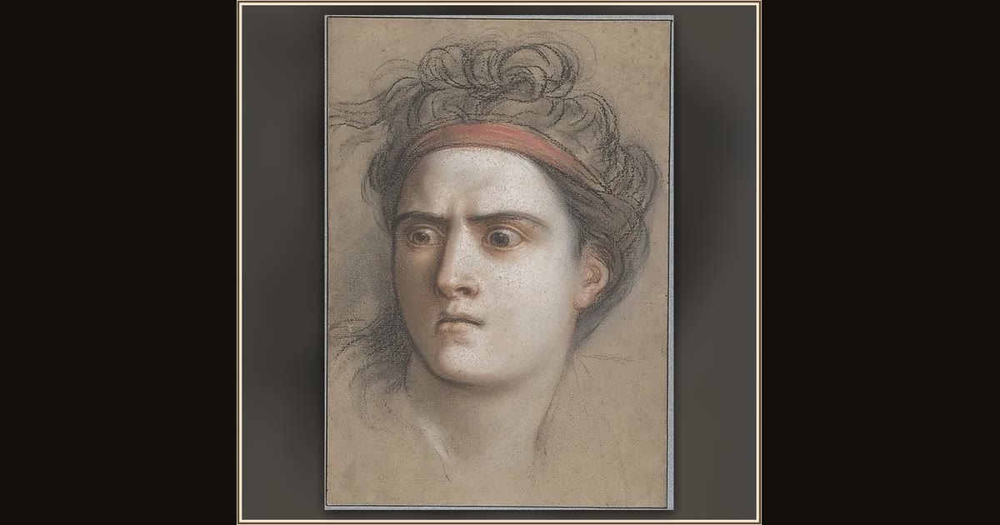

Medea
Charles Antoine Coypel · ca. 1715 · met
Coypel's pastel head shows Medea wide-eyed and tense. It gives a face to the woman who comes out of the house to address the Corinthian women. (214) Explore its place in Euripides's Plays, Medea, line 215.